第三讲：Agent 基础操作
课程讲义 · 网页教材
课程： 人工智能在经济管理研究中的应用
授课人： 张晨（西北农林科技大学经济管理学院）
第 3 次课 | 2 课时 | 2026 年夏季学期
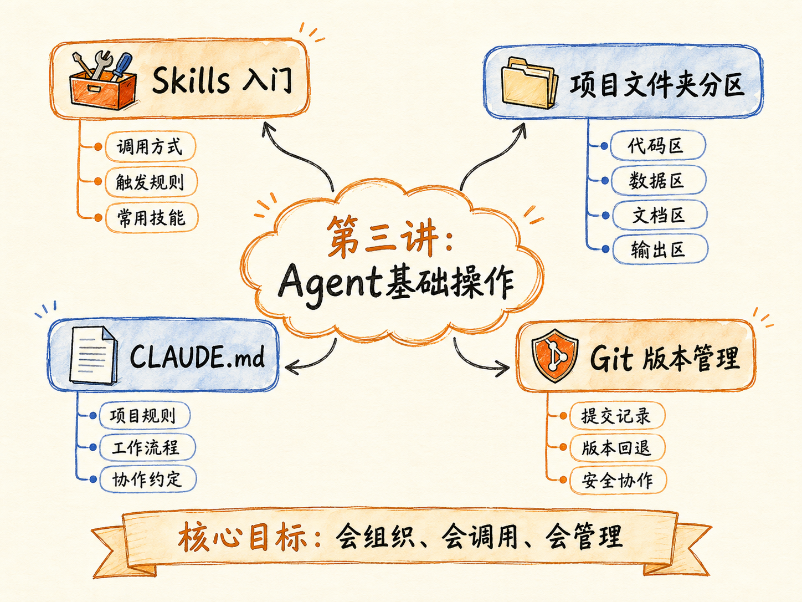
本讲概览
上一讲我们装好了工具、跑通了第一个 AI 任务。本讲的目标是：让 Agent 成为你科研工作流中可控、可复用的生产力。
具体来说，你要掌握三件事：
- Skills 是什么、怎么用——让 AI 从「能聊天」升级为「能读 PDF、能转 Word、能处理数据」
- 怎么用规则约束 Agent——用项目骨架和 CLAUDE.md 告诉 AI「什么能做、什么不能做」
- 怎么管理会话和版本——用
/clear、/compact、/resume控制上下文窗口，用自然语言驱动 Git
教学逻辑： Skills（AI 会不会做这件事）→ 项目规则（AI 在这个项目里要遵守什么）→ 会话管理 + Git（让协作过程可控、可回退）。
上节：Skills 入门与项目规则
1. Skills 是什么？
1.1 核心概念
Skills 是 AI Agent 的「专业技能包」——装了它，AI 不只是能聊天，还能读 PDF、转 Word、处理 Excel、生成 PPT、搜索文献。
比喻： 没有 Skills 的 AI = 只有通用知识的人，什么都会聊，什么文件都处理不了；加了 Skills 的 AI = 配了全套工具箱的专业人士，拿来文件就能干活。
Skills 本质上是自然语言写的「操作手册」。每个 Skill 是一个文件夹，里面至少包含一个 SKILL.md 文件，告诉 AI 遇到某类任务时该怎么做——用什么工具、走什么流程、注意什么坑。
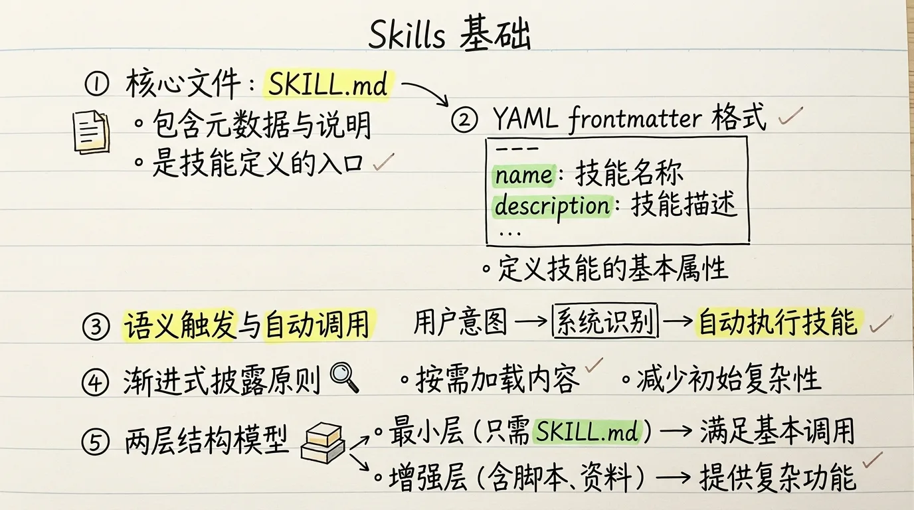
1.2 Skills 和 Agent 的关系
这是整个课程最重要的一组概念区分：
- Skills 回答「AI 会不会做某件事」——会不会读 PDF？会不会转 Word？会不会搜索文献？
- Agent 回答「让谁来做这件事」——给 AI 分配具体的角色身份和工作流程
| 维度 | Skills | Agent |
|---|---|---|
| 本质 | 工具箱（扳手、螺丝刀、电钻） | 工作人员（论文审稿专家、数据分析助手） |
| 作用 | 赋予 AI 某项具体能力 | 定义 AI 的角色、任务和输出标准 |
| 粒度 | 单一能力（读 PDF、转格式） | 完整工作角色（文献综述专家、Stata 分析助手） |
| 关系 | 被 Agent 调用 | 调用 Skills 来完成工作 |

关键一句话：Skills 决定 AI 能做什么，Agent 决定 AI 怎么做。 两者配合，才能变成「能读 PDF、懂论文内容、按期刊审稿标准提修改意见」的完整工作流。
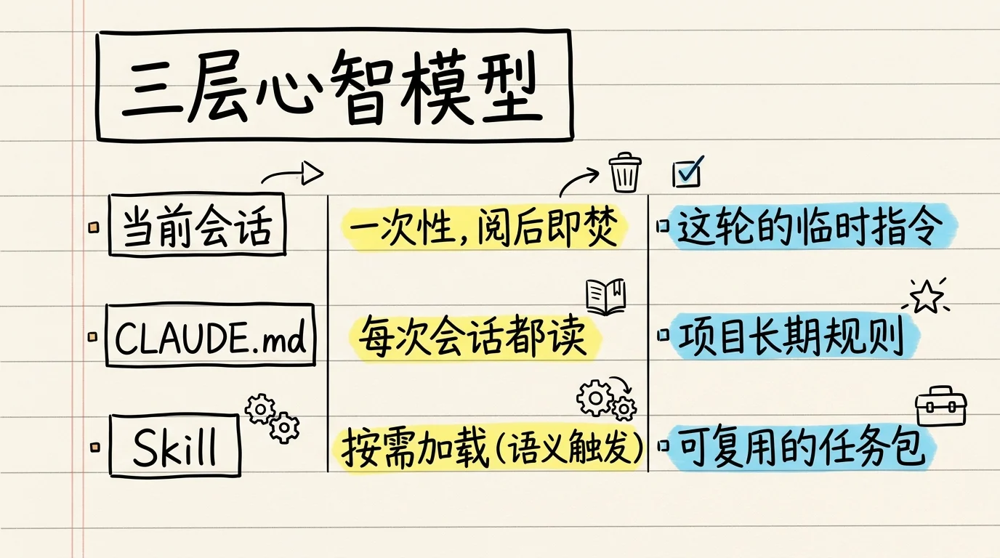
1.3 Skills 统一安装路径
OpenCode、Claude Code、Codex 都可以识别同一套 Skills。装一次，到处用。
统一安装路径：~/.claude/skills/
安装完成后，在 AI 工具中测试以下场景：
| 场景 | 指令示例 | 预期结果 |
|---|---|---|
| Markdown 转 Word | 「把 test.md 转成 test.docx」 | 生成 Word 文档 |
| 读取 PDF | 「读取这个 PDF，总结主要内容」 | 输出摘要和标题结构 |
| Excel 处理 | 「读取 Excel，告诉我有几个工作表」 | 列出工作表及内容概况 |
| PPT 处理 | 「读取 PPT，总结每页主要内容」 | 逐页总结 |
1.4 Skill 种类概览
Skills 分为几大类：
| 类别 | 典型 Skill | 功能 |
|---|---|---|
| 文档处理 | docx, pdf, pptx, xlsx | 读取和生成各类 Office 文档 |
| 格式转换 | markitdown, pandoc, marker-pdf-converter | 文档格式互转（PDF→MD、MD→DOCX 等） |
| 文献搜索 | web-research, literature-search, arxiv | 搜索学术文献和网络资料 |
| 论文辅助 | literature-review, economical-writing | 文献综述生成、学术写作润色 |
| 数据与代码 | stata-basic, stata-did, stata-iv | Stata 实证分析专用 Skill |
| 知识管理 | knowledge-extraction, five-questions | 知识提取和深度提问 |
1.5 Skills 的实际工作方式
理解 Skills 的工作机制，对后续创建自定义 Skill 至关重要：
触发机制： 你不需要手动「调用」某个 Skill。当你描述任务时，AI 会自动将你的描述与所有已安装 Skill 的 description 做语义匹配。匹配到了，AI 就按该 Skill 的 SKILL.md 中的流程执行。
你: 「帮我读一下这篇 PDF 论文，总结研究方法」
↓
AI: 自动匹配到 pdf Skill（description: "读取 PDF 文件内容"）
↓
AI: 按 SKILL.md 中定义的流程一步步操作一个任务可能触发多个 Skill：
你: 「把这篇 PDF 论文转成 Word，然后生成一份 PPT 汇报」
↓
AI: 自动触发 pdf（读 PDF）+ docx（生成 Word）+ pptx（生成 PPT）
↓
AI: 按顺序协调三个 Skill 的执行Skills 之间的协作： 一个 Skill 的输出可以作为另一个 Skill 的输入。比如 markitdown 将 PDF 转为 Markdown 后，economical-writing 可以用该内容进行学术润色。
1.6 Skills 与学术研究各环节的对应
| 研究环节 | 需要的 Skill | 说明 |
|---|---|---|
| 文献检索 | web-research, literature-search | 搜索学术数据库和网络资源 |
| 论文读取 | pdf, markitdown | 将 PDF 转为可读格式并提取信息 |
| 文献整理 | literature-review | 多篇论文的结构化综述 |
| 数据分析 | stata-basic, stata-did, stata-iv | 调用 Stata 执行回归 |
| 论文写作 | economical-writing, docx | 学术写作润色和文档生成 |
| 汇报展示 | pptx, marp-export | 生成 PPT 或演示文稿 |
2. 项目四分区骨架
2.1 为什么需要项目骨架？
规范的目录结构让 AI 和人都知道「什么在哪里」。最常见的翻车场景： 把所有东西扔在一个目录里，几次操作后分不清哪个文件是 AI 生成的、哪个是原始数据、哪个是最新版本。
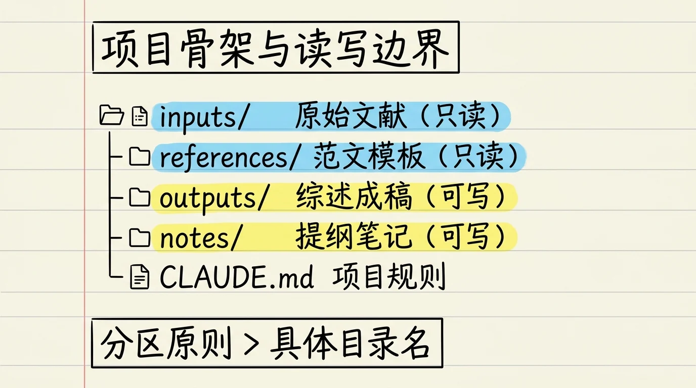
2.2 四分区结构
my-project/
├── input/ # 原始材料（只读！永远不要让 AI 修改）
│ ├── raw_data/
│ └── papers/
├── notes/ # 人机交互记录（规划、检查、决策）
│ ├── plan.md
│ └── decisions.md
├── temp/ # AI 工作空间（临时文件、中间产物）
└── output/ # 最终交付物
├── tables/
├── figures/
└── draft/各目录的详细说明：
input/：放 PDF 论文、原始数据（.dta、.csv）、问卷、官方复现包等。这是你的「不可变事实源」——就像做实验的原始记录本，不能在上面直接涂改。AI 可以读取这里的文件，但绝不能删除或修改。notes/：放你的规划文档、方法选择记录、文献阅读笔记、和 AI 的决策讨论记录。这是你和 AI 的「工作日志」——记录了「为什么选择了这个模型」「为什么排除了那篇论文」「审稿人反馈的处理策略」等。temp/：AI 的工作空间。这里放格式转换的中间文件、AI 给自己生成的执行计划、子代理之间的交接文件。可以随时清理，不影响项目的完整性。output/：最终交付物——回归表格、图形、论文草稿、复现报告、PPT 演示。只放完成了的、可以给别人看的东西。
2.3 读写边界规则
这是必须写入 CLAUDE.md 的铁律：
| 目录 | 权限 | 说明 |
|---|---|---|
input/ |
只读 | AI 可以读，但不能写、不能删。这里是你的原始数据，是「不可变事实源」 |
notes/ |
可写 | AI 可以创建和修改。放规划文档、决策记录、研究备忘 |
temp/ |
自由读写 | AI 的临时工作区，中间文件放这里，可随时清理 |
output/ |
可写 | 最终交付物：表格、图形、论文草稿 |
为什么
input/必须只读？ 因为 AI 会犯错。如果它不小心改了你的原始数据，你可能在错误的基准上跑了所有分析，几周的工作推倒重来。只读 = 你永远有一个干净的「事实源」。
3. CLAUDE.md 规则系统
3.1 什么是 CLAUDE.md？
CLAUDE.md 是 Agent 的「项目宪法」——它告诉 AI 这个项目是做什么的、要遵守什么规则、什么绝对不能做。
没有 CLAUDE.md 的时候， 你每次开新会话都要重新嘱咐一遍：「注意，原始数据不要改」「用 Stata 18 的语法」「输出表格用 esttab」。有了 CLAUDE.md， AI 启动时自动读取，不需要你重复。
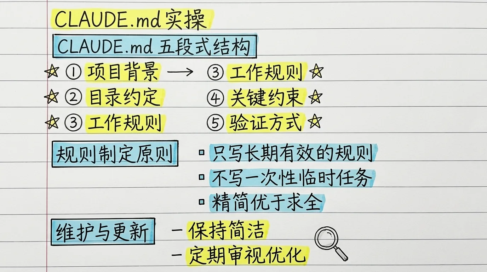
3.2 两层规则
| 层级 | 位置 | 作用范围 | 适合放什么 |
|---|---|---|---|
| 用户级 | ~/.claude/CLAUDE.md |
所有项目通用 | 你的身份、研究方向、语言偏好、通用工作风格 |
| 项目级 | <project>/CLAUDE.md |
当前项目 | 项目目标、目录规则、编码规范、约束条件 |
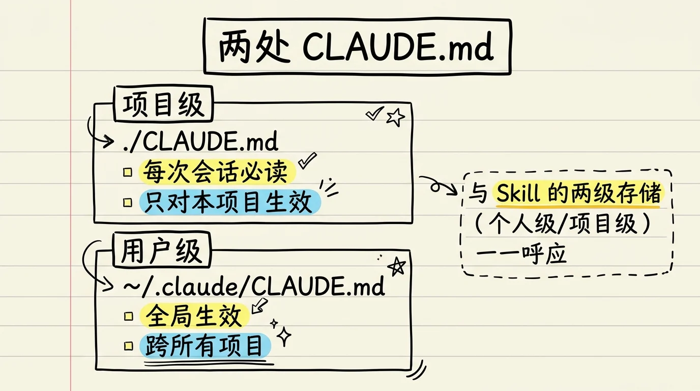
用户级 CLAUDE.md 示例：
# 关于我
- 经管研究生，研究方向：农业经济
- 常用工具：Stata 18、Python 3.12
- 语言偏好：中文交流，代码注释用英文
- 编码风格：do 文件用 /// 注释，Python 用 PEP 8
# 全局规则
- 重要分析结果必须人工确认，不得直接用于论文
- 原始数据文件只读，所有清洗在副本上进行
- 每次重大修改前先 git commit3.3 项目级 CLAUDE.md 的五类内容
- 项目目标与身份：一句话说清楚这个项目是做什么的
- 目录结构与规则：各目录的作用和读写权限
- 交互原则与最佳实践：编码风格、语言偏好、提交规范
- 约束条件：什么不能删、什么不能编造、什么必须人工确认
- 版本控制纪律：什么时候 git commit
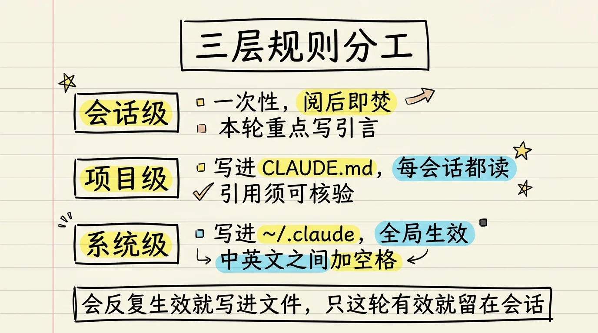
项目级 CLAUDE.md 完整示例：
# 文献综述项目：AI 对劳动力市场的影响
## 项目目标
对「AI 对劳动力市场的影响」领域的 15 篇核心论文做结构化文献综述，
输出一篇 5000 字左右的综述初稿。
## 目录结构
- input/papers/：原始 PDF 论文，只读！禁止修改或删除
- notes/：每篇论文的结构化摘要、决策记录
- temp/：AI 临时工作区，可随时清理
- output/：文献综述初稿和后续修改版本
## 交互规则
- 所有分析结果必须基于实际读取的论文内容
- 每篇论文的引用必须标注「需人工核实」
- 对比分析时，必须在 notes/ 中保留对比依据
- 修改 output/ 中的文件前，先告知修改了什么
## 约束条件
- 不得编造任何论文信息或引用
- 不得删除 input/ 中的任何文件
- 汇总时不得遗漏任何一篇论文
- 子代理的结果写入 notes/，严禁返回完整输出
## Git 纪律
- 每篇论文的结构化摘要完成后 commit
- 综述各章节完成后 commit
- 初稿完成后 commit 并打 tag3.4 三大误区
- ❌ 把临时需求写进去——CLAUDE.md 是长期规则，不是一次性指令。「帮我把这段代码改成 robust SE」请直接对话说，不要写进 CLAUDE.md
- ❌ 写成百科全书——上下文窗口是稀缺资源。控制项目级 CLAUDE.md 在 100 行以内，每多一行就多占用一份上下文份额
- ❌ 写完就不管——项目在进化，CLAUDE.md 也要同步更新。每次项目有重大变化，花 2 分钟看一遍 CLAUDE.md 是否需要更新
3.5 实战：初始化和编写 CLAUDE.md
快速初始化： 在 Agent 中输入 /init，AI 会自动分析项目结构并生成一份 CLAUDE.md 草稿。你审核修改后保存即可。
手动编写的建议：
1. 先写一句话描述项目目标
2. 定义目录结构（四分区）
3. 写 3-5 条最重要的约束条件
4. 写版本控制规则
5. 最后加一条「AI 修改了什么要清晰汇报」的交互原则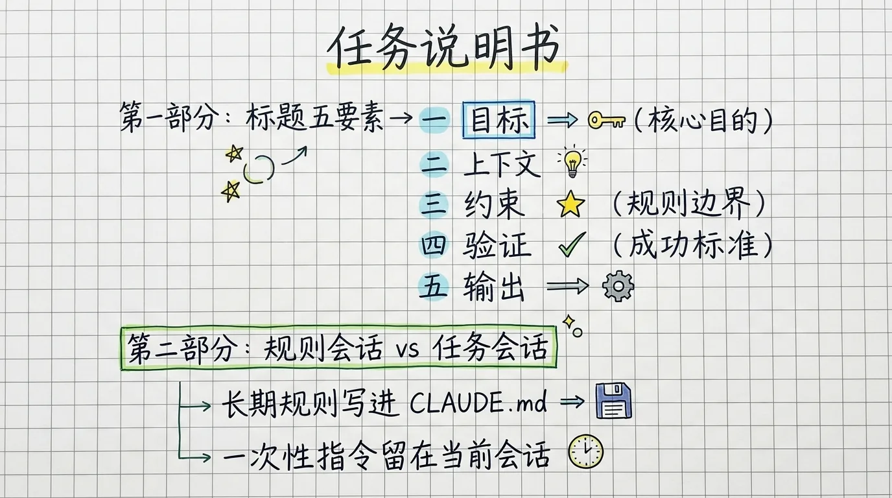
下节：会话管理与对话式 Git
4. 三种工作模式与会话管理
4.1 三种工作模式
Claude Code 有三种工作模式，对应不同的自主程度：
| 模式 | 行为 | 适用场景 |
|---|---|---|
| Normal（默认） | 每次修改文件前征求你同意 | 日常工作，安全第一 |
| Accept Edits | 自动批准当前目录的文件修改 | 你信任 AI 的简单任务 |
| Plan（规划） | 只读模式，先生成执行计划，不修改任何文件 | 复杂任务的第一步 |
⚠️ 还有一个
--dangerous-skip-permissions模式，跳过所有权限确认。绝对不要在日常项目中使用，仅在完全隔离的测试环境里跑批处理任务时考虑。
模式切换： 按 Tab 键可以在 Normal 和 Plan 之间切换。在 VS Code 的 Claude Code 面板中，也可以从界面切换。

4.2 上下文窗口：为什么需要会话管理
Agent 的每次对话是一个「会话」（session）。随着对话变长，上下文窗口会逐渐填满。
核心概念：上下文窗口是稀缺资源。 就像人的工作记忆——放太多东西就会「溢出」，表现下降。大任务要拆成小任务，每个小任务在一个会话里完成，用 Git 保存中间结果，而不是在一个无限长的对话里硬撑。
4.3 三个核心会话命令
| 命令 | 作用 | 什么时候用 |
|---|---|---|
/clear |
清空当前对话，开始全新会话 | 任务完全变了，不想被之前的对话干扰 |
/compact |
压缩当前对话，保留关键信息 | 对话太长但任务还没做完，需要释放空间 |
/resume |
恢复之前的会话 | 不小心清空了对话、电脑重启了 |
Claude Code 没有自带的会话记录导出功能，但每个会话记录都保存在
~/.claude/projects目录下，可以给 Agent 发送提示词导出。OpenCode 则可以直接通过/export（线下）或/share（线上）导出。
4.4 会话管理策略
大任务 → 拆成 3-5 个小任务
每个小任务 → 一个独立会话
会话结束 → git commit 保存成果
下一个小任务 → 新会话，AI 读取 CLAUDE.md 和 git log 理解上下文好处： 每个会话的上下文是干净的，AI 不会被之前无关的对话干扰；同时 Git 提供了完整的工作历史。
5. 对话式 Git：自然语言做版本控制
5.1 为什么需要 Git？
Git 是 AI 修改文件时的「安全网」——像游戏的存读档，AI 改错了你能一键回退，也能追踪每一次修改的内容和时间。
你不需要学 git add、git commit -m 这些命令。 直接用自然语言告诉 AI 你要做什么，AI 来翻译成 Git 命令并执行。
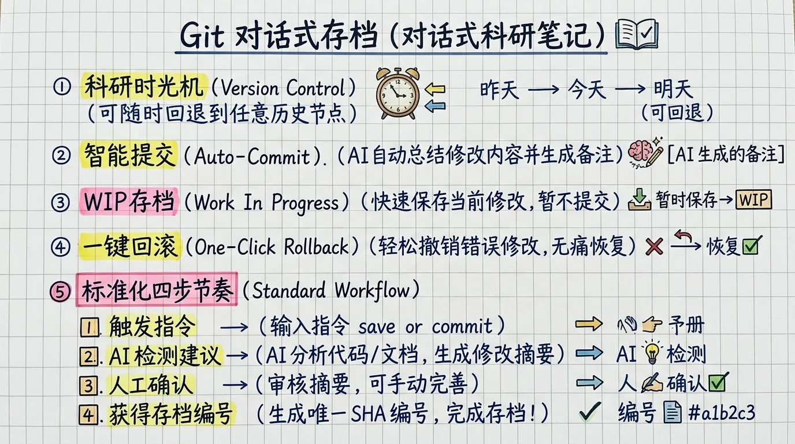
5.2 六个核心概念
| 概念 | 通俗理解 | 对应的自然语言 |
|---|---|---|
| 仓库（repository） | 一个项目的完整历史记录 | 「把这个文件夹初始化为 Git 仓库」 |
| 提交（commit） | 一次存档，包含所有修改的快照 | 「保存当前版本」「存档」 |
| 分支（branch） | 实验性修改的独立工作线 | 「创建一个分支试一下新方法」 |
| 回滚（rollback） | 回到之前的某个存档 | 「回到上一个版本」「撤销刚才的修改」 |
| 推送（push） | 把本地存档同步到远程（GitHub） | 「推送到 GitHub」 |
| 合并（merge） | 把分支的修改合并回主线 | 「把实验结果合并回来」 |
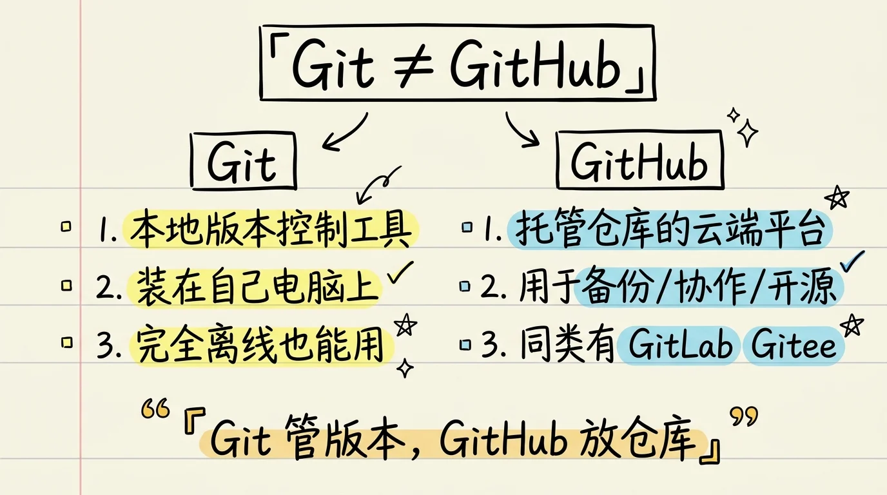
5.3 自然语言驱动 Git：实际场景
场景一：初始化仓库
你: 「帮我把当前文件夹初始化为 Git 仓库」
AI: git init → 返回「仓库已初始化」场景二：日常存档
你: 「帮我把当前所有修改保存为一个版本，描述是"完成数据清洗"」
AI: git add -A → git commit -m "完成数据清洗" → 返回 commit hash场景三：查看历史
你: 「帮我看看最近 3 次提交改了什么」
AI: 列出 commit log 和变更摘要
你: 「第 2 个 commit 改了哪些文件？」
AI: 显示该 commit 的详细变更列表场景四：实验新方法
你: 「帮我创建一个新分支，在这个分支上试一下用 logit 替代 OLS」
AI: git checkout -b experiment-logit → 「分支已创建，当前在 experiment-logit 分支」
（跑完实验后）
你: 「实验效果不好，回到原来的主分支，删掉实验分支」
AI: git checkout main → git branch -D experiment-logit → 「已回到主分支，实验分支已删除」
你: 「效果不错，把实验结果合并回主分支」
AI: git checkout main → git merge experiment-logit → 「已合并」场景五：回退
你: 「我刚才改错了，回到上一个版本」
AI: git reset --hard HEAD~1（恢复文件到上一个 commit 的状态）
你: 「不，回到上上个版本，但保留当前的修改当参考」
AI: git stash → git checkout HEAD~2 → 「已回退，之前的修改存在暂存区」场景六：出差错时诊断
你: 「我不知道现在是什么状态了，帮我看看」
AI: git status（当前有哪些修改）→ git log --oneline -5（最近 5 次提交）
你: 「我昨天下午那个版本在哪？」
AI: git log --since="yesterday.afternoon" --until="yesterday.evening" → 列出时间范围内的提交5.4 Git 的优势：为什么不用「另存为」？
有些同学习惯「另存为」来保存版本：论文_v1.docx、论文_v2.docx、论文_最终版.docx、论文_最终版_真的.docx。Git 相比「另存为」的优势：
| 维度 | Git | 「另存为」 |
|---|---|---|
| 版本数量 | 无限，每个版本之间是增量差异 | 每个版本一个完整文件副本，很快混乱 |
| 变更追踪 | 精确到每一行的修改记录 | 不知道改了什么 |
| 分支实验 | 并行实验多条思路，互不干扰 | 只能串行改，回退困难 |
| 协作 | 多人并行修改同一项目 | 几乎不可能 |
| 空间占用 | 极小（增量存储） | 每个「另存为」都是完整副本 |
| 时间线 | 清晰的修改历史和原因 | 没有历史回溯能力 |
5.5 版本控制纪律
关键原则：每次重大修改前存档。 不要怕存太多——commit 是廉价的，丢数据是昂贵的。
推荐的 commit 节点：
- 修改任何原始数据文件之前
- 跑回归之前（保存清洗后的数据状态）
- AI 做大规模文件操作（批量重命名、格式转换）之前
- 每次阶段性成果完成后
6. 实战：搭建文献综述项目
6.1 任务描述
用多 Agent 委派完成一个小型文献综述：输入 3-5 篇相关主题的 PDF 论文，输出一份结构化的文献综述初稿。
6.2 工具选择：Tool vs Partner 思维
在开始之前，先理清一个关键认知：
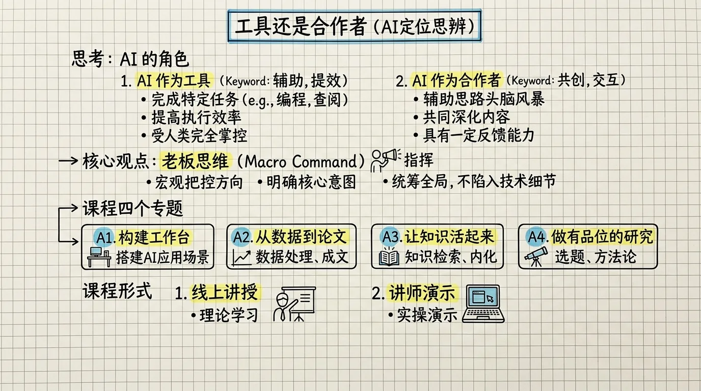
传统工具思维：你告诉工具每一步做什么。Partner 思维：你告诉 Agent 目标，它自行规划路径。本实战中，你要以 Partner 的角色告诉 AI：「我要做这个文献综述，请规划并执行」，而不是「先读这篇、再读那篇、然后汇总」。
6.3 操作步骤
第一步：创建项目骨架
在 VS Code 中创建项目文件夹 lit-review-ai-economics/，建立四分区结构：
lit-review-ai-economics/
├── input/
│ └── papers/ # 放入 3-5 篇 PDF 论文
├── notes/ # 子代理的结构化摘要
├── temp/ # 临时文件
└── output/ # 最终综述第二步：初始化项目规则
在 Agent 中输入 /init，AI 会自动生成 CLAUDE.md。检查并补充：
- 输入目录只读规则
- 文献引用必须逐条核实的要求
- 并行处理多篇论文的策略
第三步：用自然语言委派任务
请帮我做这个文献综述项目：
1. 读取 input/papers/ 中的每篇论文
2. 为每篇论文提取：研究问题、识别策略、主要结论、核心贡献
3. 汇总成一份文献综述初稿
4. 输出到 output/literature-review.md
对于多篇论文的阅读，请派出多个子代理并行处理。
每个子代理读取一篇论文，将结构化摘要写入 notes/ 文件夹。
所有子代理完成后，再由一个子代理汇总写入初稿。第四步：审核
- 在
notes/中检查各子代理的结构化摘要是否正确 - 审核
output/literature-review.md的引用是否准确
⚠️ 重要提醒（来自 Part 1）： AI 生成的文献引用有约 20% 是完全虚构的。每一条引用必须回到原文逐条验证，不能直接用于论文。
第五步：Git 存档
「帮我把当前的文献综述成果保存为一个版本，描述是"文献综述初稿完成"」6.4 多 Agent 委派的关键要领
这个实战中最容易出错的地方是子代理之间的协调。以下是要点：
（1）任务拆解要明确
给每个子代理的任务说明必须包含：输入文件路径、具体要做什么、输出文件路径、输出格式。模糊的任务说明会导致子代理输出参差不齐，汇总困难。
（2）子代理结果必须写入文件
这是最重要的纪律——不要让子代理把完整结果返回给主代理。原因：
- 上下文窗口有限，3-5 个子代理的完整输出可能占满窗口
- 文件是持久化的，主代理后续任何时候都可以读取
- 文件可以被你人工审核
（3）审查环节不可省略
所有子代理完成后，一定要有人（你或一个审查子代理）检查：
- 各子代理的输出格式是否一致
- 是否有明显的遗漏或错误
- 引文是否准确
（4）从简单开始
第一次用多 Agent 委派时，只用 2-3 篇论文、2-3 个子代理。跑通了再扩大规模。
6.5 常见问题
Q: 子代理不听指令怎么办？
在任务说明里写得更具体一些。特别是输出格式——不要写「总结论文」，要写「用以下四个标题总结：（1）研究问题（2）识别策略（3）主要结论（4）核心贡献，每个标题下 3-5 句」。
Q: 子代理漏掉了某篇论文怎么办？
在汇总阶段前，先让 AI 检查 notes/ 目录下的文件数量是否与 input/papers/ 中的论文数量一致。
Q: 如何确保引文准确？
AI 阅读的 PDF 可能包含准确的引用信息（标题、作者、期刊、年份），但也可能因为 PDF 格式问题而识别错误。每一条引用必须回到原文或学术数据库逐条验证。 这不能交给 AI，必须人工完成。
7. 本讲核心概念回顾
| 概念 | 一句话解释 |
|---|---|
| Skills = 工具箱 | 赋予 AI 处理具体文件格式和任务的能力（读 PDF、转 Word、搜文献） |
| Agent = 工作角色 | 定义 AI 的身份、任务范围、输出标准 |
| 四分区骨架 | input（只读）/ notes（规划）/ temp（临时）/ output（交付） |
| CLAUDE.md = 项目宪法 | 告诉 AI 规则，比每次临时嘱咐高效得多 |
| 上下文窗口是稀缺资源 | 大任务拆小任务，小任务独立会话 |
| Git = 科研时光机 | 存档驱动开发，AI 改错了随时回退 |
| Partner 思维 | 告诉 AI 目标，而不是每一步做什么 |
8. 课后任务
- 在自己的研究领域选一个主题，创建项目骨架（四分区），编写 CLAUDE.md
- 用
/init初始化你的第一个用户级 CLAUDE.md（~/.claude/CLAUDE.md） - 找 3 篇 PDF 论文做一个微型文献综述，体验多 Agent 委派流程
- 每次阶段性成果完成后，用自然语言做一次 Git 存档
- 尝试切换三种工作模式，感受 Normal / Accept Edits / Plan 的区别
课堂参考材料
| 文件 | 内容 |
|---|---|
Part1-AI工具介绍与环境配置.md |
Skills 安装与 Agent 创建基础 |
Part2-Agent操作与知识库构建.md |
本讲详细教学内容 |